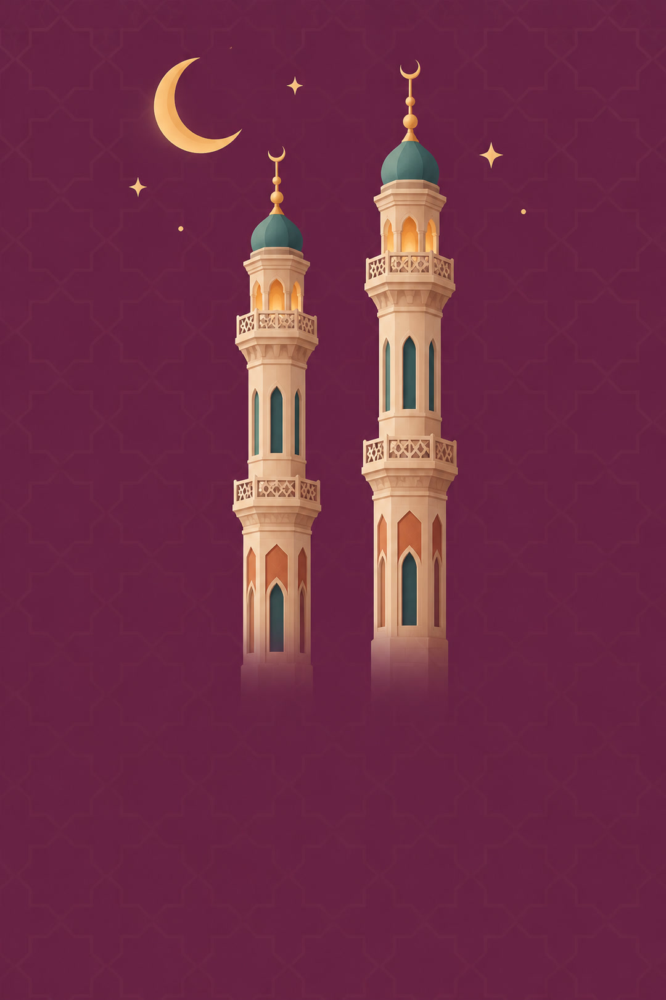

46-дарс
كَانَ
нинг
исми ва хабари
كَانَ
الْجَوُّ
جَمِي
لٌ
جَمِي
لًا
Ҳаво чиройли
Ҳаво чиройли
эди
Охири ўзгарди — нега?
كَانَ
كَانَ
تْ
كَانَ
تِ
муаннаслик
ت
си
اَلطَّالِ
بُ
الطَّالِ
بُ
الطَّالِبَ
ةُ
мубтадо
كَانَ
нинг исми
раф
муаннас
كَبِي
رٌ
كَبِي
رًا
كَبِيرَ
ةً
бўйсунди
хабар
كَانَ
нинг хабари
раф
насб
«Раф бўл!»
«Охирингни ўзгартир!»
«Мен аллақачон рафман»
охири ўзгармайди
Қандай қилиб?
бироздан кейин кўрамиз
Толиб каттадир
Толиб катта
эди
Толиба катта
эди
2 сукун йўлиқди
تْ
→
تِ
касра билан боғланди
كَانَ
мубтадо
كَانَ
нинг
исми
раф
хабар
كَانَ
нинг
хабари
насб
ТАРКИБДА ШУНДАЙ АЙТИЛАДИ
كَانَ
ноқис мозий феъли
фатҳага мабний
الطَّالِ
بُ
كَانَ
нинг исми
раф қилинган, аломати зоҳирий замма
كَبِي
رًا
كَانَ
нинг хабари
насб қилинган, аломати зоҳирий фатҳа
Таржимаси икки хил
қадимда бўлган воқеа
→
эди
яқинда бўлган воқеа
→
бўлди
Аллоҳ ҳақида
→
доимо
Аллоҳ
доимо
мағфиратли, раҳмлидир
маъно гап эгасидан келади
муфрад · бирлик
синиқ жам · кўплик
фатҳа
тасния · иккилик
ي
ҳарфи
муаннас жам · кўплик
фатҳа ўрнига касра
фақат жинсда мослашади · сонда эмас
олдинги дарслардан
كَانَ
اَلثِّيرَا
نُ
الثِّيرَا
نُ
ақлсиз · кўплик
كَبِيرَ
ةٌ
كَبِيرَ
ةً
муаннас · бирлик
насб
Ҳўкизлар каттадир
Ҳўкизлар катта
эди
مَا
нафий ҳарфи
كَانَ
бўлди · эди
бўл
ма
ди ·
эмас
эди
Толиб катта
эмас
эди
كَانَ
келса
исми
раф
хабари
насб
исми муаннас бўлса
كَانَ
تْ
«Икки толиба катта эди»
كَانَ
تِ
الطَّالِبَتَ
ا
نِ
?
كَبِيرَتَ
ا
نِ
كَبِيرَتَ
يْ
نِ
كَبِيرَ
ةً
Ўйлаб кўринг…
✓
ي
билан
иккиликда насб аломати —
ي
كَانَ
нинг исми ва хабари
(2)
47-дарс
نُورُ الطَّالِبِ
Грамматика · 9-боб
Ўтган видеода
Оддий гап
Қоида
Содда қилиб айтсак
Таржимаси
Бир нозик жой
Исми муаннас бўлса
Насб аломатлари
Ақлсиз кўплик
Инкор
Хулоса
Савол
Кейинги видео
Грамматика · 46-дарс
كَانَ
нинг исми ва хабари
ҚОРАЛАМА · янги бўлаклар — робот овоз